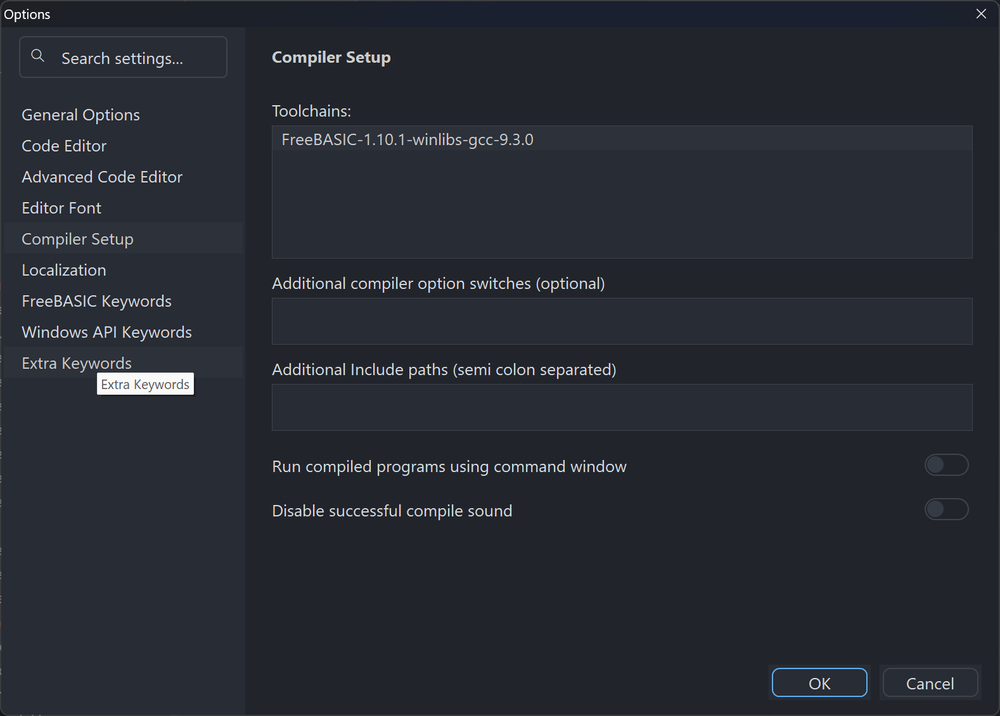

Quick Start
Install Tiko Editor, learn the interface, and work through editing, searching, building, running and debugging a program — in about 25 minutes.
This walkthrough takes 20–30 minutes and touches every part of the editor you will use daily. If you would rather learn in smaller pieces with exercises, take the ten-lesson tutorial instead — it covers the same ground more slowly.
1. Install and launch
Tiko Editor does not use an installer. Unpack the distribution into any folder you can write to and run tiko-editor.exe from there.
- Unpack the archive into a folder — for example
C:\tiko-editor. AvoidC:\Program Files: Tiko Editor writes its settings beside the executable, and that location is protected. - Double-click
tiko-editor.exe. - The main window opens with an empty untitled workspace.
Run tiko-editor.exe from the folder you unpacked, not from a copy you moved elsewhere on its own. Tiko Editor finds its themes, settings and keyword files relative to its own location, so a stray copy starts with no theme and no configuration.
2. Get your bearings
The window has five regions. Spend a moment locating each one.
Two shortcuts worth learning immediately: Ctrl + B toggles the side panel and Ctrl + F9 toggles the Output panel. Both give the editor the whole window when you need room.
3. Create your first file
- Choose File›New or press Ctrl + N. A new untitled document opens in a new tab.
- Type the short program below. Notice that keywords colour themselves as you type, and that pressing Enter after
Forautomatically indents the next line.
' hello.bas - a first FreeBASIC program
Dim As Integer i
For i = 1 To 5
Print "Line "; i
Next i
Print "Press any key to finish."
Sleep4. Save, and Save As
- Press Ctrl + S. Because the file has never been saved, the Save As dialog opens.
- Choose a folder, name the file
hello.bas, and save. The tab caption changes from Untitled to the file name. - Type another line, then press Ctrl + S again. This time it saves silently — no dialog.
- To write a copy under a different name, use File›Save As…. The editor then continues editing the new file, not the original.
An asterisk or modified marker on a tab means the file has unsaved changes. Ctrl + Shift + S saves every modified document at once.
5. Reopen recent work
Tiko Editor keeps two separate recent lists, and the distinction matters:
- File›Open Recent — individual files you have opened.
- Project›Recent Projects — whole workspaces, restoring every file that was open.
Each list ends with Clear this list if you want to reset it. Tiko Editor also reopens your last workspace automatically when it starts, so in normal use you rarely need either list.
6. Edit: undo, clipboard, selection
The basics behave exactly as they do in every Windows editor:
| Action | Shortcut | Notes |
|---|---|---|
| Undo | Ctrl + Z | Unlimited within a session. |
| Redo | Ctrl + Shift + Z | Reapplies what Undo removed. |
| Cut | Ctrl + X | With no selection, acts on the whole line. |
| Copy | Ctrl + C | |
| Paste | Ctrl + V | |
| Select all | Ctrl + A | |
| Select the current line | Ctrl + L | Repeat to extend downward. |
| Delete the current line | Ctrl + Y | No selection needed. |
| Duplicate the current line | Ctrl + D | |
| Move the line up or down | Alt + ↑ / Alt + ↓ | Moves the selection if there is one. |
Selecting text
- Drag with the mouse, or hold Shift and use the arrow keys.
- Double-click selects a word; triple-click selects a line.
- Column (rectangular) selection: hold Alt while dragging, or hold Alt + Shift and use the arrow keys. Typing then edits every selected line at once.
- Multiple selections: hold Ctrl and drag or click to add further selections, then type to edit them all together.
Column mode is the quickest way to add the same prefix to a run of lines — select the zero-width column down the left edge and type once.
7. Search and replace
- Press Ctrl + F to open Find. Type
Print. - Press F3 to jump to the next match and Shift + F3 for the previous one — these work even after the Find bar has closed.
- Press Ctrl + H for Replace. Enter what to find and what to put in its place, then use Replace for one match at a time or Replace All for every match.
- Press Ctrl + Shift + F for Find in Project to search every file in the workspace at once. Results collect in the Output panel; click one to jump straight to it.
Find offers three latching options — Match Case, Match Whole Words and Selection. Tiko Editor does not support regular expressions. See Find and Replace.
8. Jump around the file
| Goal | How |
|---|---|
| Go to a symbol or file anywhere in the project | Ctrl + P opens the fuzzy finder; type a few letters of a procedure, type or file name. |
| Go to a specific line | There is no Goto Line dialog — click the compiler error, search result or bookmark instead. See Navigation. |
| Jump to a definition | Put the caret on a name and press F12. |
| Come back again | Alt + ← goes back, Alt + → goes forward. |
| Next / previous procedure | Ctrl + PgDn / Ctrl + PgUp |
| Toggle a bookmark | Ctrl + F2; F2 and Shift + F2 cycle through them. |
| See every procedure in the file | F4 opens the function list. |
9. Check your compiler
Compiler toolchains are subfolders of the toolchains\ folder beside tiko-editor.exe, and each one holds both fbc32.exe and fbc64.exe. To see which is selected, or to switch to another you have installed:
- Open File›Settings›Options….
- Select the Compiler page.
- The list shows every toolchain found in
toolchains\. Click one to select it. - Choose OK.
Whether you build 32-bit or 64-bit is decided by the build configuration, not by the toolchain — every toolchain contains both compilers. See Build configurations.

10. Build and run
With a compiler configured, the whole cycle is three keys:
| Command | Shortcut | What it does |
|---|---|---|
| Build and Execute | F5 | Compiles, and runs the result if the compile succeeded. The command you will use most. |
| Compile | Ctrl + F5 | Compiles without running. |
| Rebuild All | Ctrl + Alt + F5 | Rebuilds everything from scratch. |
| Quick Run | Ctrl + Shift + F5 | Compiles and runs the current file on its own, ignoring the project. |
| Run Executable | Shift + F5 | Runs the last successful build without recompiling. |
| Compile Module | Ctrl + F7 | Compiles only the current module. |
- Press F5.
- The Output panel opens on its Compiler tab and shows the build.
- If the build succeeds, your program runs.
- If it fails, each error appears as a line in the panel. Click an error to jump straight to the file and line that caused it.
Quick Run (Ctrl + Shift + F5) is ideal for a scratch file — it builds and runs just that file with no project set-up at all.
11. Debug
Tiko Editor has a real source-level debugger built in, not just a console window.
- Click in the margin beside a line, or press F9, to set a breakpoint. A marker appears in the margin.
- Press F6 to start debugging. The program runs until it reaches your breakpoint and then stops, with the current line marked.
- Step through the code: F11 steps into calls, F10 steps over them, Shift + F11 steps out of the current procedure.
- Hover the mouse over a variable to see its value, or read the debugger panes — globals, locals, the call stack and your watch expressions.
- Press Shift + F6 to stop debugging.
Debugging needs a build that carries debug information. Tiko Editor selects an appropriate debug build automatically. See Debugging for the full story.
12. Make it yours
Two quick customizations before you finish:
Pick a theme
- Open File›Settings›Themes… (or press Ctrl + Shift + T).
- Choose from the fourteen bundled themes — light and dark variants of several families.
- Apply, and the whole interface changes with it.
Set the editor font
- Open File›Settings›Options….
- On the editor page, choose the font name, size and character set. The default is Consolas at 11 point.
- Choose OK.
13. Close down
- Ctrl + W closes the current document; Ctrl + Shift + W closes them all.
- Alt + F4 exits Tiko Editor. You are prompted to save anything modified.
- Your workspace — which files were open, and the window layout — is restored the next time you start.
What now?
Take the full tutorial
Ten lessons with exercises, from first file to advanced editing.
Learn the interface properly
Every panel, tab, dialog and status field explained.
Learn the shortcuts
The complete list, grouped by category and ready to print.
Pick up power-user habits
Workflows and hidden features that repay the time.